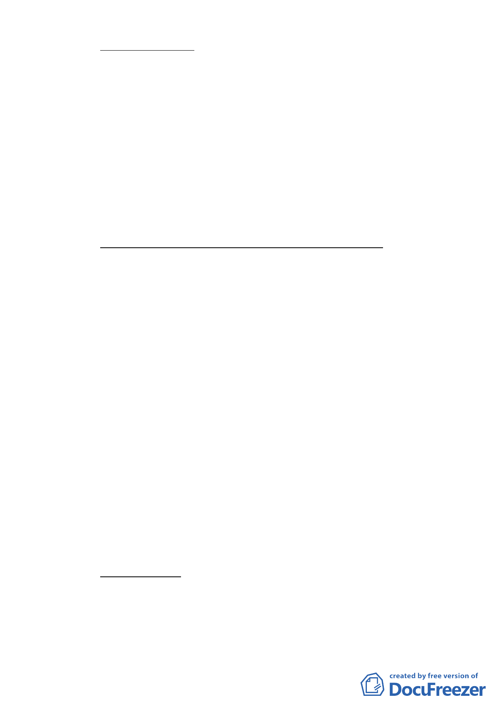

（二）建築物高度限制：
1、街廓編號 C1、C2（供觀光旅館使用）建築物高度以不低於
100 公尺為原則，文字上並需說明係維持全區最高之建物。
2、其餘商業區及娛樂區之建築物高度以不超過 90 公尺為原
則。
3、有關建物鄰棟間隔之規定及二、三層樓處空中花園之設
置，建議於都市設計管制中予以納入。
4、基於高層防災之需求，本案全區建物建議得設置天橋連通
並可免計入容積。
（三）好好看基地申請獎勵之開放空間對環境貢獻規定：
1、申請獎勵之廣場式公共開放空間應具有通視性、穿越性及
公用性。
2、廣場式公共開放空間未設置阻隔性設施或作為建築物主要
出口之通道使用者，始得申請獎勵，且應 24 小時開放供公
眾使用。
3、開放空間留設之位置應與本計畫附圖「指定留設之公共開
放空間系統」整合使用，並可通達 20 公尺以上之主要計畫
道路。
4、街廓編號 A1、A2、B1、B2 內每單一土地細分規模留設之
廣場式開放空間形狀應完整，且每處達 500 平方公尺以上，
並設置公共藝術。
5、開放空間設計應對都市環境提出具體生態貢獻。
6、開放空間設計應配合附表之指定使用組別進行空間規劃，
以提升活動之強度。
（四）獎勵額度上限
本計畫區維持原計畫各項容積增加上限不得超過 50％之規
定。接受容積移轉 20％及申請台北好好看獎勵容積部份亦須符
合前項規定。
-6-